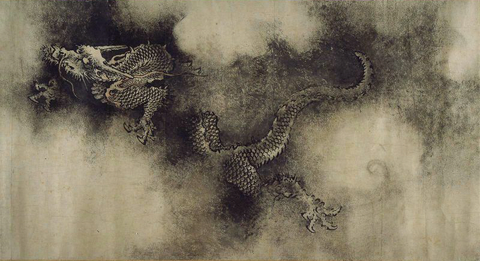
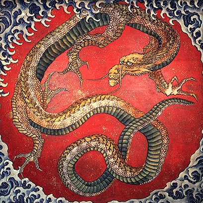

China

A dragon from the Nine Dragons Scroll by Chen Rong, 1244 AD.
The word "dragon" has come to be applied to the legendary creature in Chinese mythology, loong (traditional 龍, simplified 龙, Japanese simplified 竜, Pinyin lóng), which is associated with good fortune, and many East Asian deities and demigods have dragons as their personal mounts or companions. Dragons were also identified with the Emperor of China, who, during later Chinese imperial history, was the only one permitted to have dragons on his house, clothing, or personal articles.
image of the Chinese dragon was roughly established in the Shang and Zhou dynasties, but there was no great change for a long time. In the Han dynasty (202 B.C. - 220 A.D.), Yinglong, as a symbol of feudal imperial power, frequently appeared in Royal Dragon vessels, which means that most of the dragon image designs used by the royal family in the Han dynasty are Yinglong patterns. Yinglong is a winged dragon in ancient Chinese legend. At present, the literature records of Yinglong's winged image can be tested from "Guangya"（广雅), "wide elegant" during the Three Kingdoms period, but Yinglong's winged design has been found in bronze ware from the Shang and Zhou dynasties to stone carvings, silk paintings, and lacquerware of the Han dynasty. The literature records of Yinglong can be traced back to the documents of the pre-Qin period, such as "Classic of Mountains and Seas", "Chuci", and so on. According to the records in "Classic of Mountains and Seas", the Chinese mythology 2200 years ago, Ying long had the main characteristics of later Chinese dragons – the power to control the sky and the noble mythical status.[61]
One of the most famous dragon stories is about the Lord Ye Gao, who loved dragons obsessively, even though he had never seen one.[62] He decorated his whole house with dragon motifs[62] and, seeing this display of admiration, a real dragon came and visited Ye Gao,[62] but the lord was so terrified at the sight of the creature that he ran away.[62] In Chinese legend, the culture hero Fu Hsi is said to have been crossing the Lo River, when he saw the lung ma, a Chinese horse-dragon with seven dots on its face, six on its back, eight on its left flank, and nine on its right flank.[63] He was so moved by this apparition that, when he arrived home, he drew a picture of it, including the dots.[63] He later used these dots as letters and invented Chinese writing, which he used to write his book I Ching.[63] In another Chinese legend, the physician Ma Shih Huang is said to have healed a sick dragon.[64] Another legend reports that a man once came to the healer Lo Chên-jen, telling him that he was a dragon and that he needed to be healed.[64] After Lo Chên-jen healed the man, a dragon appeared to him and carried him to heaven.[64]
Korea

The Blue Dragon mural depiction at the Goguryeo tombs.
The Korean dragon is in many ways similar in appearance to other East Asian dragons such as the Chinese and Japanese dragons. It differs from the Chinese dragon in that it developed a longer beard. Very occasionally, a dragon may be depicted as carrying an orb known as the Yeouiju (여의주), the Korean name for the mythical Cintamani, in its claws or its mouth. It was said that whoever could wield the Yeouiju was blessed with the abilities of omnipotence and creation at will, and that only four-toed dragons (who had thumbs with which to hold the orbs) were both wise and powerful enough to wield these orbs, as opposed to the lesser, three-toed dragons. As with China, the number nine is significant and auspicious in Korea, and dragons were said to have 81 (9×9) scales on their backs, representing yang essence. Dragons in Korean mythology are primarily benevolent beings related to water and agriculture, often considered bringers of rain and clouds. Hence, many Korean dragons are said to have resided in rivers, lakes, oceans, or even deep mountain ponds. And human journeys to undersea realms, and especially the undersea palace of the Dragon King (용왕), are common in Korean folklore.
Japan

Painting of a Japanese dragon by Hokusai (c. 1730 – 1849)
Japanese dragon myths amalgamate native legends with imported stories about dragons from China. Like some other dragons, most Japanese dragons are water deities associated with rainfall and bodies of water, and are typically depicted as large, wingless, serpentine creatures with clawed feet. Gould writes (1896:248),[80] the Japanese dragon is "invariably figured as possessing three claws". A story about the samurai Minamoto no Mitsunaka tells that, while he was hunting in his own territory of Settsu, he dreamt under a tree and had a dream in which a beautiful woman appeared to him and begged him to save her land from a giant serpent which was defiling it.[64] Mitsunaka agreed to help and the maiden gave him a magnificent horse.[64] When he woke up, the seahorse was standing before him.[64] He rode it to the Sumiyoshi temple, where he prayed for eight days.[64] Then he confronted the serpent and slew it with an arrow.[64]
It was believed that dragons could be appeased or exorcised with metal.[64] Nitta Yoshisada is said to have hurled a famous sword into the sea at Sagami to appease the dragon-god of the sea[64] and Ki no Tsurayuki threw a metal mirror into the sea at Sumiyoshi for the same purpose.[64] Japanese Buddhism has also adapted dragons by subjecting them to Buddhist law;[64] the Japanese Buddhist deities Benten and Kwannon are often shown sitting or standing on the back of a dragon.[64] Several Japanese sennin ("immortals") have taken dragons as their mounts.[64] Bômô is said to have hurled his staff into a puddle of water, causing a dragon to come forth and let him ride it to heaven.[64] The rakan Handaka is said to have been able to conjure a dragon out of a bowl, which he is often shown playing with on kagamibuta.[64] The shachihoko is a creature with the head of a dragon, a bushy tail, fishlike scales, and sometimes with fire emerging from its armpits.[64] The fun has the head of a dragon, feathered wings, and the tail and claws of a bird.[64] A white dragon was believed to reside in a pool in Yamashiro Province[81] and, every fifty years, it would turn into a bird called the Ogonchô, which had a call like the "howling of a wild dog".[81] This event was believed to herald terrible famine.[81] In the Japanese village of Okumura, near Edo, during times of drought, the villagers would make a dragon effigy out of straw, magnolia leaves, and bamboo and parade it through the village to attract rainfall.

_(4489839164)@0.33x.jpg)
@0.75x.jpg)